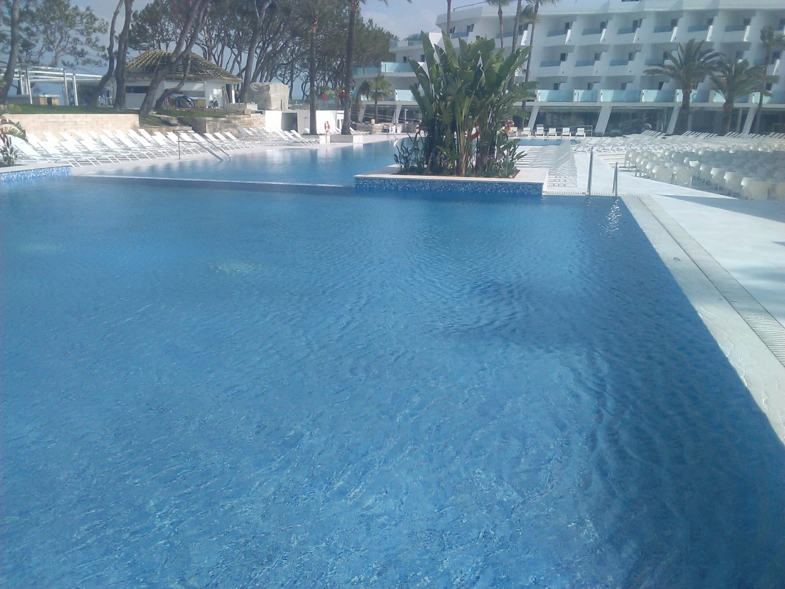
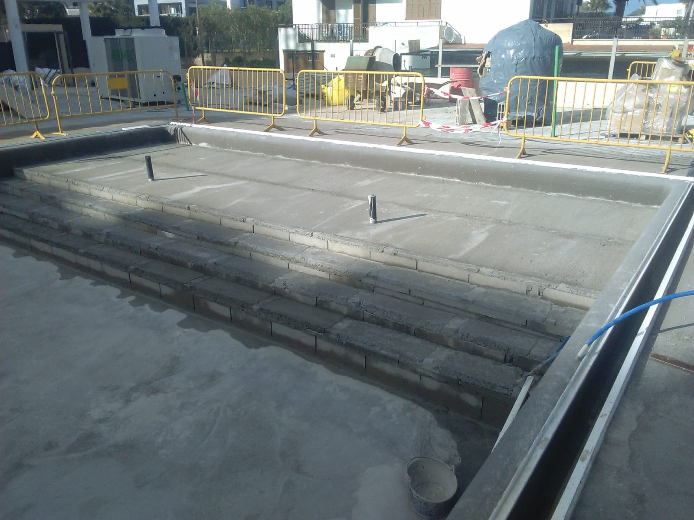
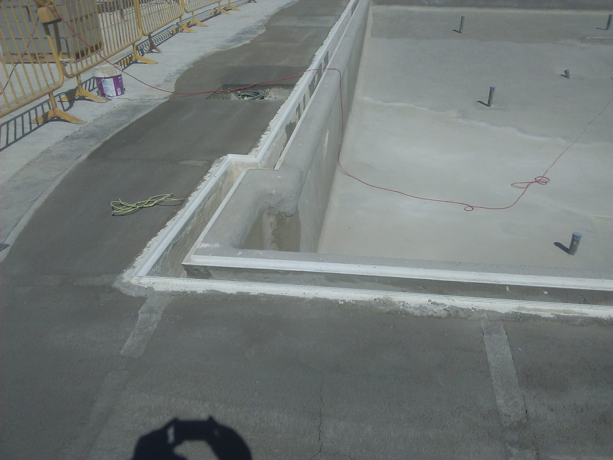
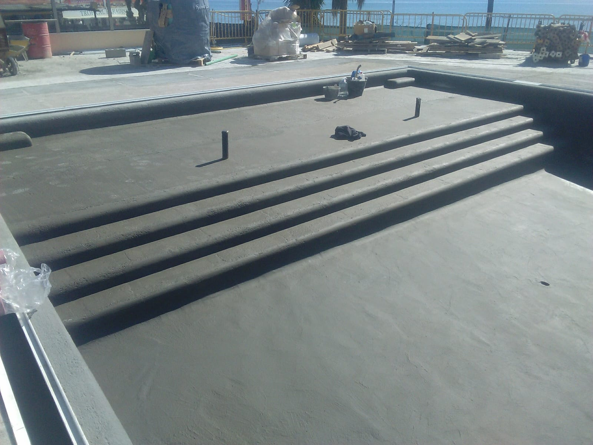

Borde y canal
Definimos la solución de recogida y su integración con la coronación y los accesos.
PISCINAS DESBORDANTES · ARCOS Y CÁDIZ
Un plano de agua que llega al borde y se recoge en un canal. Una solución que une el diseño del vaso con el funcionamiento de la depuración.
Consultar mi proyecto ↗
DISEÑO Y FUNCIONAMIENTO
El agua de la superficie rebosa hacia un canal de recogida. Desde allí pasa al depósito de compensación, que forma parte del circuito de filtración y retorno al vaso.
El conjunto debe estudiarse como un sistema: nivel del borde, canal, depósito, tuberías y equipos. La ejecución de las cotas es parte fundamental del resultado.
ANTES DE CONSTRUIR
Valoramos el espacio, los acabados y las instalaciones dentro de un mismo proyecto.
Definimos la solución de recogida y su integración con la coronación y los accesos.
Prevemos su ubicación, capacidad y acceso para las tareas de revisión y limpieza.
Seleccionamos materiales compatibles con el vaso y sus encuentros, pensando también en las zonas de paso.
Dimensionamos las instalaciones conjuntamente con la geometría y el uso previsto de la piscina.
DETALLES DE OBRA
Fotografías para apreciar el vaso, los bordes y su relación con el exterior.



RESOLVEMOS TUS DUDAS
La recogida de superficie se realiza por un canal de desbordamiento, en lugar de las aberturas de los skimmers. El circuito requiere prever la compensación del agua.
Se puede estudiar para una parcela particular. Hay que valorar el espacio del vaso y de las instalaciones, las cotas y el alcance de la obra.
Además del control y tratamiento del agua, deben revisarse el canal, el depósito y los equipos siguiendo las instrucciones de cada instalación.
El presupuesto depende de las dimensiones, el terreno, los accesos, los acabados y las instalaciones. Envíanos la localidad, fotos del espacio y las medidas aproximadas para estudiar el proyecto.
ENCUENTRA TU ESTILO
OCM POOL · CERCA DE TI
Cuéntanos dónde quieres construir o renovar tu piscina. Con unas fotografías y las medidas aproximadas podremos estudiar el siguiente paso.
Pedir presupuesto por WhatsApp